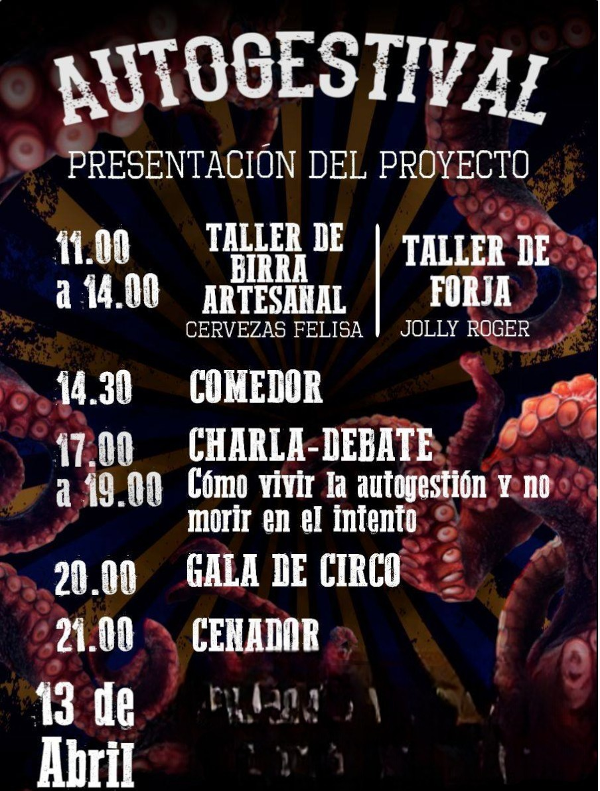

| Autogestival Festival Autogestionado: Bebidas a 1 Euro ¡Celebra la libertad en nuestro festival autogestionado! Únete a nosotros para música, arte y bebidas a solo 1 euro. ¡Diversión garantizada sin vaciar tu bolsillo! Dónde: [Asociación VikalPunk] Cuándo: Domingo [20 de Agosto] Entrada: Gratis ¡No te pierdas esta experiencia única! ¡Ven y únete a la fiesta!/td> |  |
| Kafeta ¡Café Rebelde!: Café Ardiente, Música Caliente ¡Adéntrate en nuestro café punky, donde el café está ardiente y la música está aún más caliente! Únete a la rebelión con conciertos en vivo de bandas del barrio. ¡Sabor, sonido y actitud punk en un solo lugar! Ubicación: Asociación VikalPunk Horario: Todos los lunes Conciertos en Vivo: Cada lunes un grupo diferente!! ¡Descubre una experiencia café única en su clase! ¡Ven y vive el punk con nosotros! |
 |
| Manifestacion ¡Únete a nuestra manifestación por la preservación de los árboles y la defensa del entorno rural! Juntos levantaremos nuestras voces para proteger nuestros bosques, salvar nuestros árboles y defender el estilo de vida rural. Detalles de la Manifestación: Fecha: Miércoles [15 Septiembre] Hora: [18:oo PM] Lugar: [Atocha] Participación: Abierta a todos. ¡Juntos podemos hacer la diferencia! Únete a nosotros y luchemos por un futuro más verde y sostenible para todos. ¡Defendamos nuestros árboles y nuestro entorno rural! |
 |
| Charla 526 años ¡Únete a nuestra charla sobre resistencia y represión racial! Exploraremos el poder de la comunidad, las luchas históricas y las formas de resistir la opresión. ¡Juntos, desafiaremos la injusticia y construiremos un futuro más equitativo! Detalles de la Charla: Fecha: Jueves [8 de marzo] Hora: [18:00 PM] Lugar: [Asociación VikalPunk] Entrada: Libre ¡Únete a la conversación y sé parte del cambio! |
 |
| Taller de fotografía ¡Haz que tus fotos hablen por sí mismas! Únete a nuestro taller de fotografía punky y descubre cómo capturar la esencia cruda y audaz del estilo punk en cada disparo. Detalles del Taller: Fecha: Sábado, [10Marzo] Hora: 10:00 AM - 4:00 PM Lugar: [Asociación VikalPunk] Inscripción: Precio libre. ¡Atrévete a ser diferente, a desafiar lo convencional y a dejar tu marca en el mundo de la fotografía punk! ¡Únete a nosotros y muestra tu lado más rebelde a través del objetivo de tu cámara!. |

|
| Tattoo Únete a nosotros este sábado para sumergirte en el mundo del arte punk en nuestro evento de tatuajes. Descubre diseños únicos, música enérgica y una comunidad de espíritus rebeldes. ¡No te lo pierdas! Detalles del Evento: Fecha: Sábado, [17 Marzo] Hora: 12:00 PM - 8:00 PM Lugar: [Asociación VikalPunk] Admisión: Gratis ¡Ven y muestra tu espíritu punk con tinta y actitud! ¡Nos vemos allí! |
 |